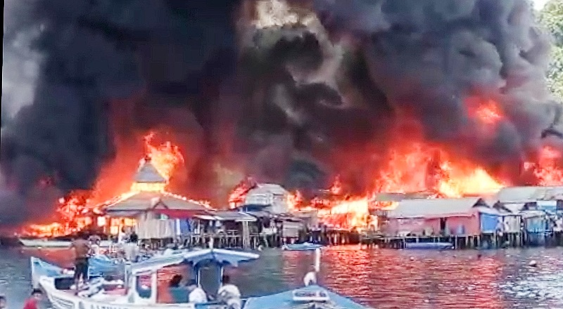

Hari ini pada siang hari tanggal 30 September 2021 raturan rumah di kawasan pasar Borobudur, Teluk Doreri, kota Manokwari terbakar. Penyebab kebakaran tersebut hingga saat ini belum diketahui secara pasti. Kebakaran di kawasan ini sudah pernah terjadi dan api membesar dengan cepat sekali karena kawasan tersebut padat dengan penduduk dan rumah-rumah saling berdempetan satu dengan lainnya. Kebanyakan rumah tersebut terbuat dari kayu.
Kebakaran besar di kawasan Pasar Borobudur terbakar
Kerugian materi yang diderita masyarakat mencapai puluhan milyar rupiah. Kebanyakan warga masyarakat yang tinggal di kawasan Pasar Borobudur berprofesi sebagai nelayan dan pedagang. Ketika api sedang berkobar, mereka berusaha memadamkannya menggunakan air laut, namun karena cuaca panas, angin, dan bahan rumah yang sebagian besarnya kayu semakin memperbesar api yang menghanguskan apa saja yang ada di sekitarnya. Sebagian besar nelayan yang tinggal di sana mengungsi dengan memuat harta benda yang bisa diselamatkan ke atas perahu.
Meskipun api akhirnya bisa dipadamkan, jumlah rumah yang dihanguskannya telah mencapai puluhan buah. Warga yang menjadi korban mengungsi di rumah keluarga dan di tempat-tempat publik yang memiliki atap sebagai tempat berteduh. Tempat pengungsian sementara seperti BLK, Gelanggang Olah Raga dan Gedung Wanita akan segera disiapkan oleh pemerintah daerah sebagai tempat penampungan sementara bagi para pengungsi.
Manokwari adalah ibukota Provinsi Papua Barat yang populer di kalangan wisatawan asing yang suka dengan aktivitas penjelajahan hutan dan pengamatan burung-burung surga.